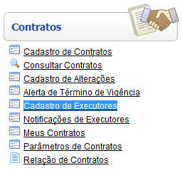
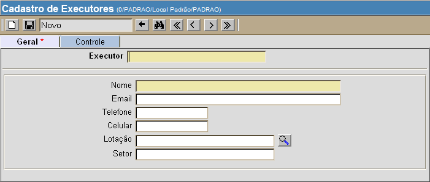

Cadastro de Executores [ Voltar ]Utilize este formulário para cadastrar executores de um contrato. O formulário "Cadastro de executores" encontra-se dentro do menu "Contratos". 
Ao clicar no menu "Cadastro de executores", o sistema exibirá a seguinte tela: 
Siga os passos abaixo para cadastrar o executor de um contrato: 1º Passo: informe os dados do executor. Os campos em amarelo são obrigatórios.
2° Passo: se todos os dados estiverem corretos, clique no botão  para salvar o cadastro. para salvar o cadastro. |
 [Procurar]
para selecionar o local a partir de uma listagem de locais cadastrados.
[Procurar]
para selecionar o local a partir de uma listagem de locais cadastrados.